고화질 PTZ 카메라 최신 펌웨어ㅣ왜곡 보정 UP
ㅣ
B7-220W
펌웨어 업그레이드
최신 이미지 최적화 기술을 적용하여 보다 뛰어난 화질을 제공합니다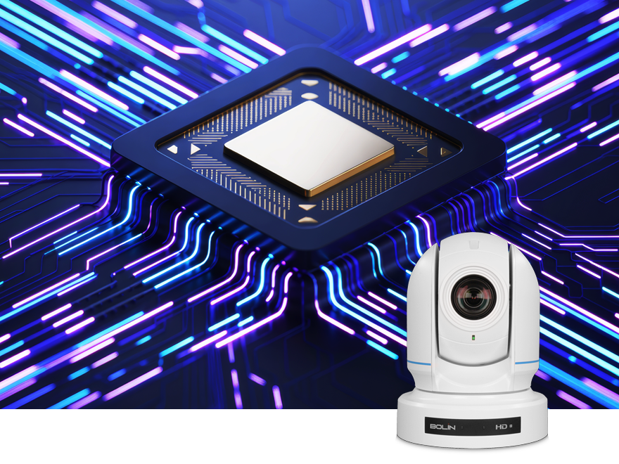
왜곡 보정UP
광각 렌즈 사용 시 발생할 수 있는 광학 왜곡 현상을 최소화하여 피사체 주변 배경을 보다 자연스러운 영상으로 제공합니다.
20배 고배율, 광학 줌
광학 렌즈를 고배율로 확대하여 피사체를 촬영하는 방식으로, 디지털 줌과 달리 화질 저하 없이 멀리 있는 대상을 고화질로 촬영할 수 있는 기능입니다.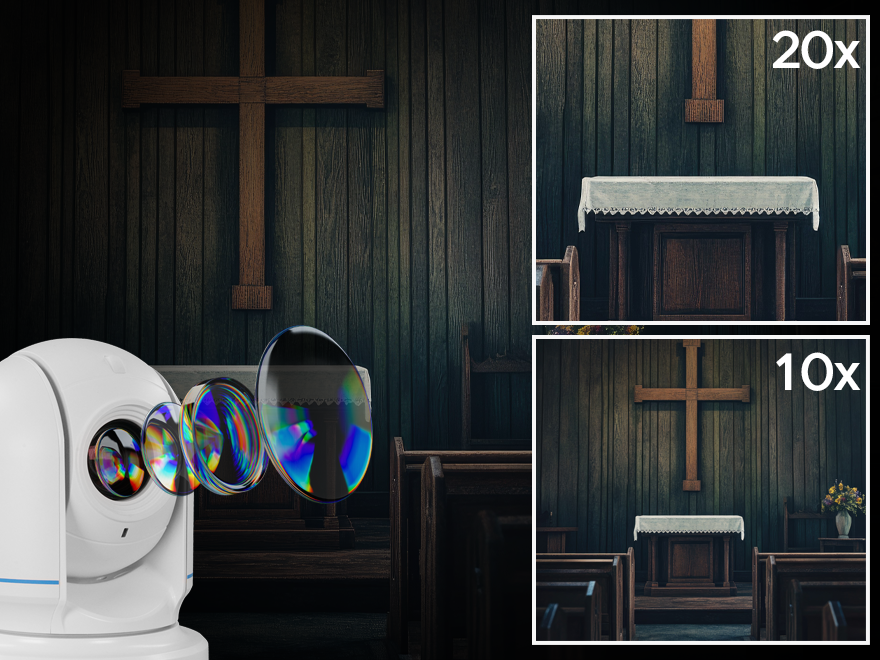
강단까지 20m의 거리에서도 인물 영상을 클리어 줌인/아웃 할 있어 먼 거리에서도 선명한 화질로 충분히 촬영할 수 있습니다.
AI 자동 초점, 자동 익스포저
피사체 얼굴을 분석하여 스마트한 자동 초점 및 자동 익스포저 기능을 제공하며 복잡한 조명 환경에서도 더욱 빠르고 정확한 이미지 품질을 제공합니다
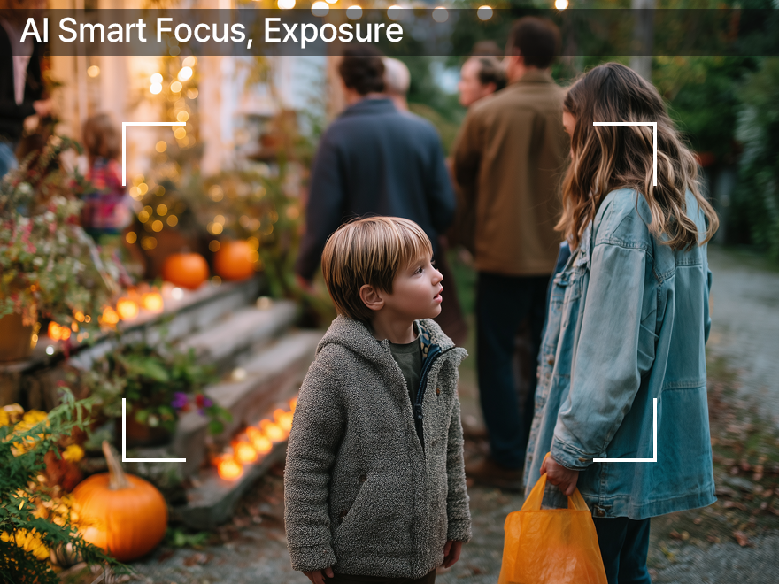
AI Smart Focus, Exposure
10비트 컬러로 화질 개선
기존 8비트의 경우 색 정보가 부족하여 계단현상이 자주 일어 날 수 있어 10비트 출력은 깨짐 없이 보다 좋은 색 표현이 가능합니다.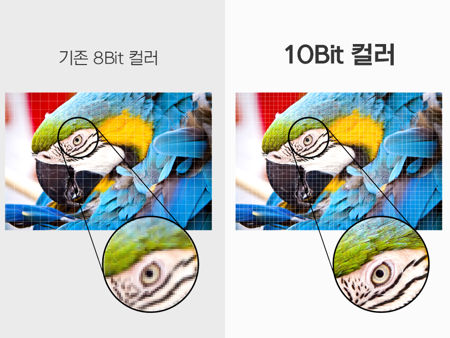
SONY Image Sensor
1/2.8인치 소니 이미지 센서를 탑재하여 보다 선명한 영상과 우수한 색상, 뛰어난 광학 정밀도로 최대 Full HD 해상도까지 제공합니다.
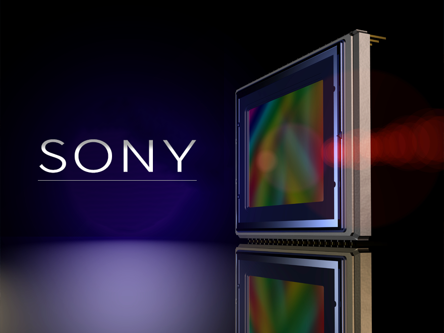
Full HD 해상도
최대 1920 x 1080 해상도에서 초당 60프레임까지 지원하여 깨끗한 화질로 영상을 보실 수 있습니다.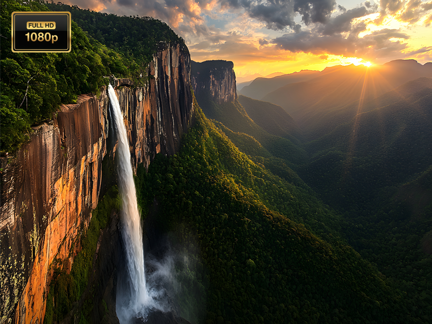
2.13MP 유효화소
더욱 선명하고 세밀한 디테일을 가진 이미지를 얻을 수 있으며 1920 x 1080 해상도의 Full HD 영상을 구현하는데 필요한 픽셀수를 의미합니다.
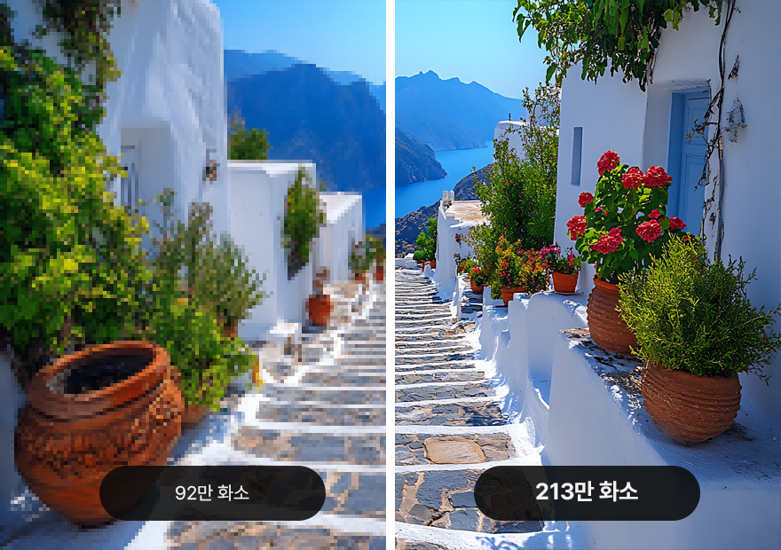
편리한 PoE 기능
네트워크 허브를 통해 제품 LAN 단자에 전원을 공급할 수 있으며 IP 컨트롤러와 다수의 카메라를 인터넷 케이블로 연결하여 원격으로 조정할 수 있습니다.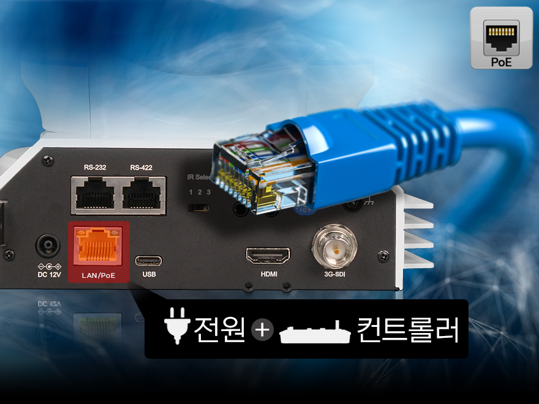
카메라 별 메뉴와 위치값 저장
카메라 1대 사용 혹은 다수의 카메라의 경우 카메라마다 번호를 지정하여 앵글 위치값과 컬러, 화이트밸런스 등 메뉴 값과 팬, 틸트, 줌 위치값을 저장 및 호출할 수 있습니다.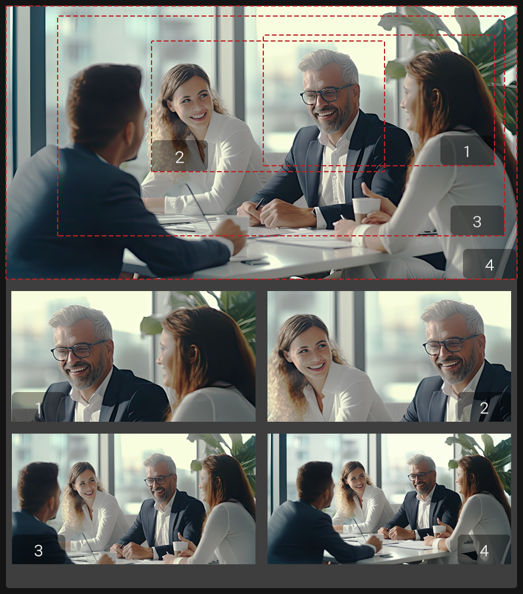
원격 조정
카메라의 팬, 틸트, 줌을 원격으로 조정할 수 있어 사용자의 편의성을 높여줍니다.리모컨(포함)
카메라 1~4번프리셋 9개 Max
SMC-10(옵션)
카메라 1~5번퀵 프리셋 5/10개 모드
SMC-100(옵션)
카메라 1~7번프리셋 255개 Max
구성도
영상시스템 예시 블록도입니다. IP 네트워크를 통해 단순한 구성으로 방송시스템을 보다 편리하게 운용할 수 있습니다.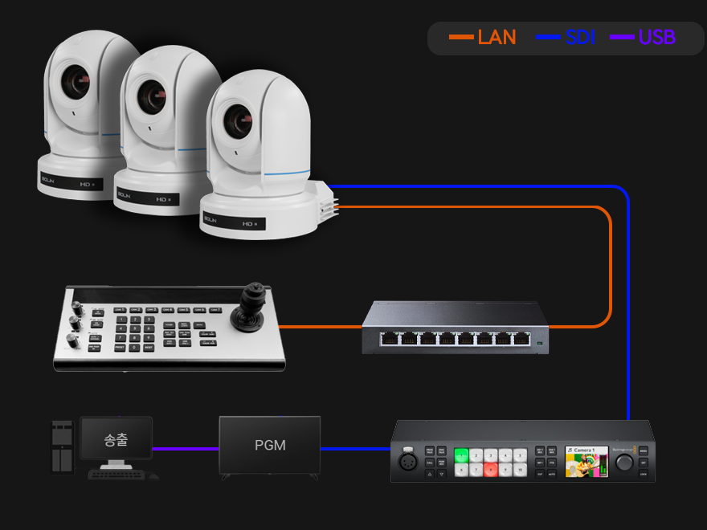
인터페이스
HDMI와 3G-SDI, IP 출력 포트는 모두 동시에 사용이 가능하며 화질 저하나 딜레이 없이 같은 해상도로 영상을 보실 수 있습니다.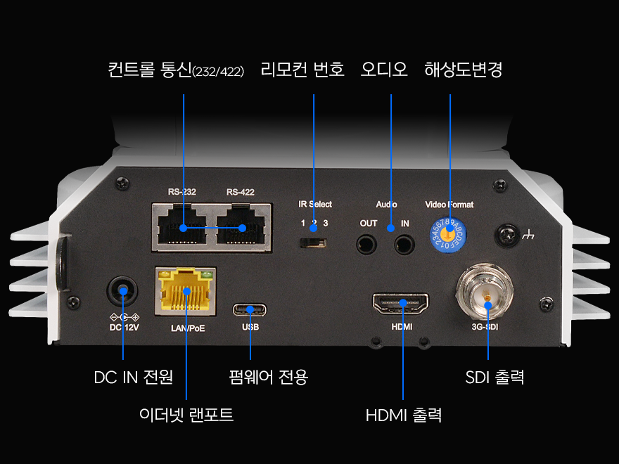
Movement Matters
부드럽고 조용하며 정밀한 움직임을 제공합니다 (Pan: ±170°, Tilt: +90° to -30°)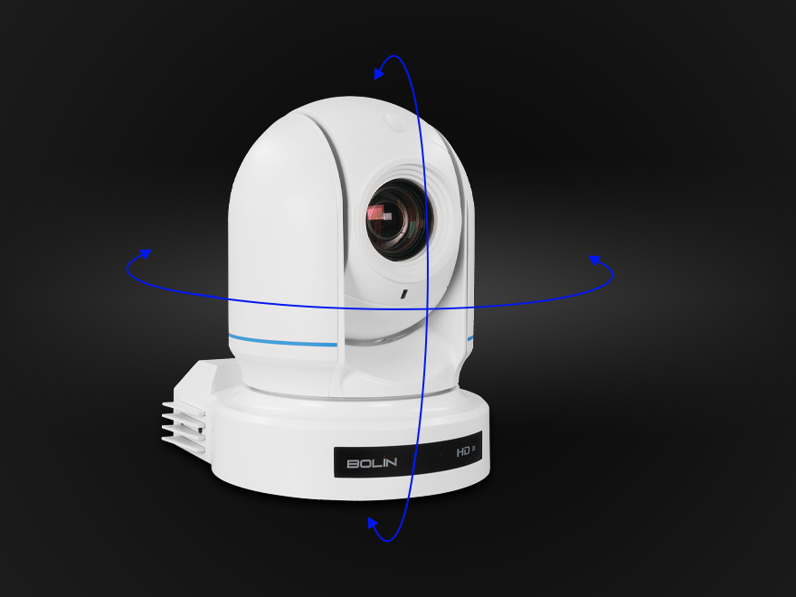
다양한 활용도
천장, 벽, 기둥, 트라이포드(삼각대)등 다양하게 설치가 가능하며 우수한 영상 출력으로 교회, 학원, 사무실, 라이브, 스포츠, 화상회의, 병원 등 다양한 환경에서 최적의 방송 비디오 영상 출력 스트리밍이 가능합니다. 종교시설
종교시설 교육기관
교육기관 화상회의
화상회의 방송관련
방송관련 현장중계
현장중계 스튜디오
스튜디오FEATURES
2.13MP 고화질 SONY 센서
최대 해상도 1080@60fps
화질 저하 없이 20배 광학줌
HDMI, 3G-SDI 동시 출력 지원
편리한 네트워크 PoE 지원
오토포커스, 간편한 프리셋
MJPEG, HEVC-H.264/265 코덱
2D/3D 노이즈 억제 기술
고속·저소음 팬/틸트/줌 지원
1년 무상 품질보증
소다미디어에서 PTZ 카메라를 구매 후 1년 무상 A/S를 보증합니다.(보증 제외 사항: 사용자의 부주의(충격, 침수 등), 임의 분해/개조, 비정상적 사용으로 인한 고장은 유상 수리 대상입니다.)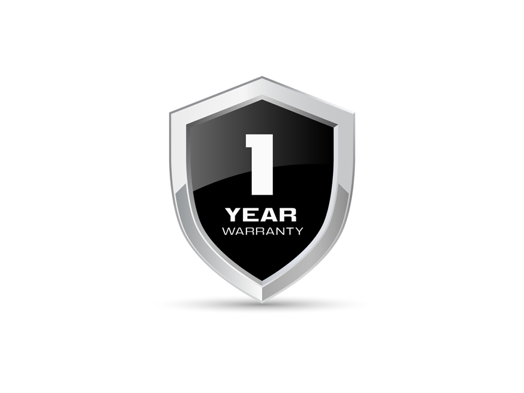
SPECIFICATIONS
| Image Sensor | Sony Progressive scan CMOS 1/2.8", 2.13 MP | |
|---|---|---|
| Zoom | Optical Zoom 20X, Digital Zoom 16X | |
| SDI Output | 3G-SDI (BNC x1), 1080p60/50/30/25, 720p60/50/30/25 | |
| HDMI Output | HDMI 1.4 Type A, 1080p60/50/30/25, 720p60/50/30/25 | |
| Shutter Speed | 1/25 ~ 1/100K sec | |
| Focus | Auto, Manual, One Push | |
| White Balance | Auto, Indoor, Outdoor, Manual | |
| Pan/Tilt Movement | Pan: ±170°, Tilt: +90° to -30° | |
| Minimum Illumination | 0.5lux (color), 0.1lux (B&W) | |
| Control Interface | RS422, IP Control, IR Remote | |
| Preset | 255 positions (9 on remote) | |
| Connectors | HDMI, 3G-SDI, RJ45, USB Type-C, DC12V | |
| Environment | -10°C to +50°C, ≤80% Humidity | |
| Size | 179 x 140 x 211 mm | |
| Weight | 1.5kg | |
| Power | DC12V 2A or PoE+ (10-13W) | |